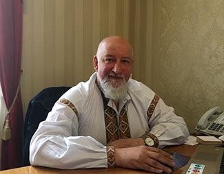
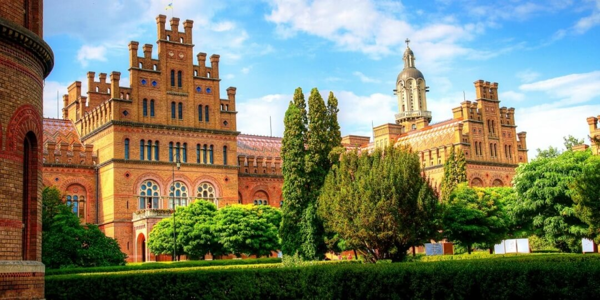
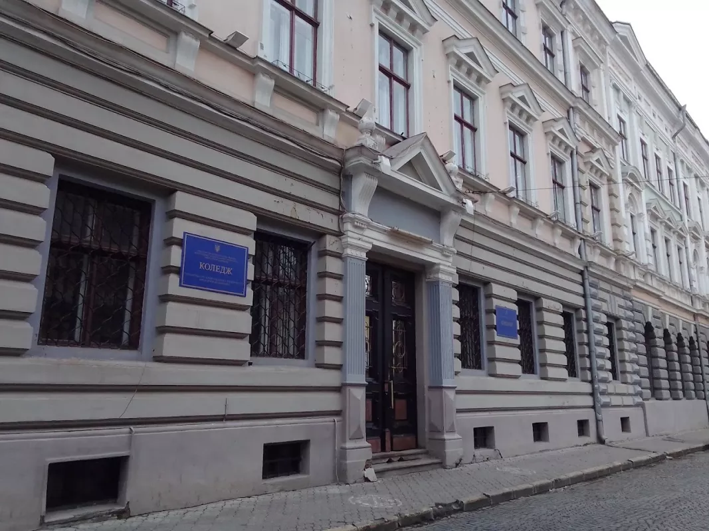
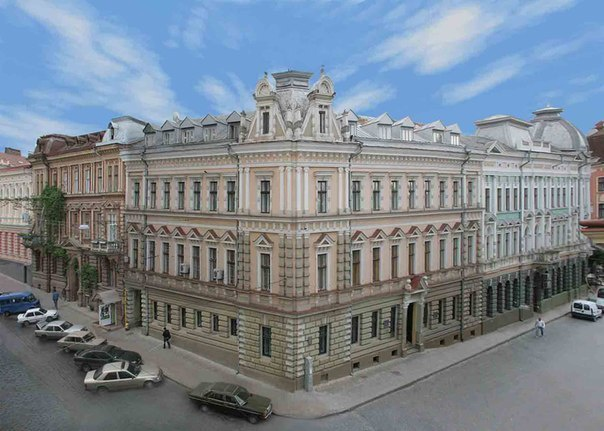
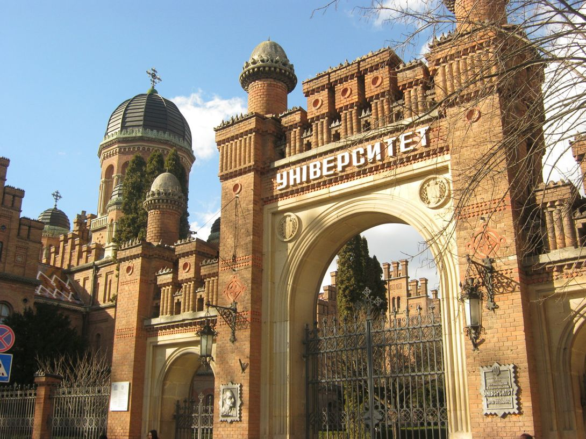
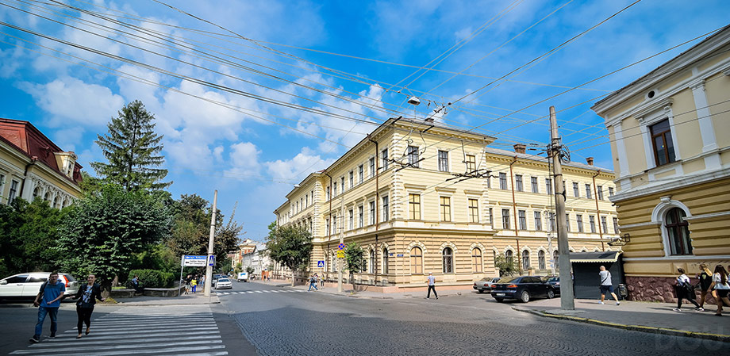

"Як без крил птахам бува годі полетіти, так і людям без наук також не зажити."
Мануїл Козачинський
Головна
Відокремлений структурний підрозділ «Фаховий коледж Чернівецького національного університету імені Юрія Федьковича» є структурним підрозділом університету без статусу юридичної особи і надає освітні послуги, пов'язані з одержанням фахової передвищої освіти з одночасним наданням повної загальної середньої освіти. Наш заклад освіти посідає одне з провідних місць серед закладів фахової передвищої освіти Чернівецької області.

Директор, Олександр СОБЧУК
Юридичною датою створення ВСП "Фаховий коледж ЧНУ імені Юрія Федьковича" є 2001 рік, проте за такий короткий період існування він посів одне з провідних місць серед закладів фахової передвищої освіти. Підтвердженням цього є успішні виступи наших студентів на всіх етапах Всеукраїнських олімпіад серед студентів закладів фахової передвищої освіти. Студенти ВСП "Фаховий коледж ЧНУ імені Юрія Федьковича" неодноразово здобували абсолютні перемоги, що давало можливість нашому коледжу приймати у своїх стінах учасників ІІІ етапу Всеукраїнської олімпіади. Найвищих результатів на Всеукраїнському етапі з предметних олімпіад було досягнуто наступними студентами:
2010 р. – Василь Мельник, 1 місце (Математика);
2011 р. – Микита Чайка, 3 місце (Математика);
2012 р. – Олександра Слободян, 1 місце (Математика);
2013 р. – Юрій Лугош, 3 місце (Математика);
2018 р. – Алла Іванюк, 2 місце (Українська мова);
2019 р. – Олександр Мар’янчук, 3 місце (Математика).





Звичайно, такі вагомі успіхи досягнуті завдяки високопрофесійному науково-педагогічному колективові, загальна кількість яких у коледжі становить 108 викладачів, серед яких: 3 доктори наук (1 професор), 30 кандидатів наук (15 доцентів), 53 викладачі вищої категорії, 10 викладачів-методистів.
Говорячи про освіту загалом, хочеться згадати слова американського письменника і викладача Роберта Тору Кіосакі: "Освіта, яка не вчить жити успішно в сучасному світі, не має ніякої цінності. Кожен із нас приходить у життя з природженою здатністю жити щасливо й успішно. А ми повинні збагатити цю здатність знаннями і навичками, які допомогли б нам реалізувати її якомога ефективніше".
Саме тому у процесі навчання ми враховуємо сучасні вимоги до освіти та намагаємося максимально адаптувати теоретичний і практичний матеріал до реалій життя, тісно пов'язати його з майбутньою професійною діяльністю студентів.
Із врахуванням потреб регіону у ВСП "Фаховий коледж ЧНУ імені Юрія Федьковича" здійснюється підготовка фахових молодших бакалаврів за освітньо-професійними програмами на таких спеціальностях:
071 "Облік і оподаткування";
072 "Фінанси, банківська справа та страхування";
076 "Підприємництво, торгівля та біржова діяльність";
081 "Право";
113 "Прикладна математика";
122 "Комп'ютерні науки";
123 "Комп'ютерна інженерія".
З метою найкращого впровадження навчального процесу використовуються навчальні площі та об'єкти соціальної інфраструктури ЧНУ імені Юрія Федьковича. За ВСП "Фаховий коледж ЧНУ імені Юрія Федьковича" закріплені місця для поселення студентів у гуртожиток.
Після закінчення ВСП "Фаховий коледж ЧНУ імені Юрія Федьковича" наші випускники отримують можливість продовжити навчання в університеті для здобуття освітнього рівня "бакалавр" за відповідним напрямом підготовки.
Підсумовуючи сказане, ми звертаємося до потенційних абітурієнтів і запрошуємо до навчання у ВСП "Фаховий коледж ЧНУ імені Юрія Федьковича". Викладацький склад нашого закладу освіти зробить все можливе для того, щоб наші студенти мали високий рівень знань і були конкурентноспроможними на сучасному ринку праці.